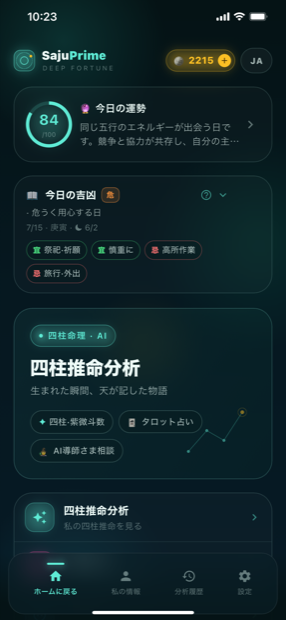
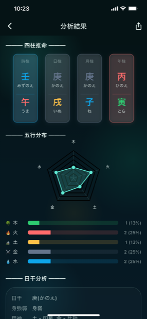
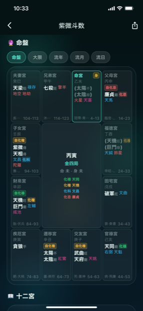
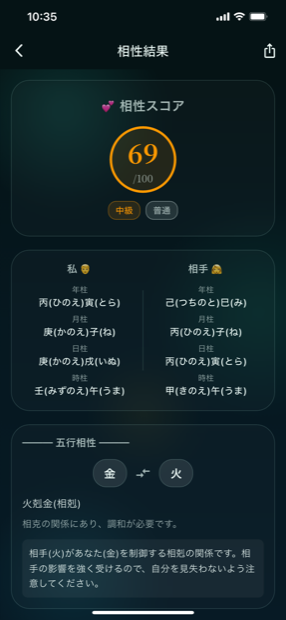
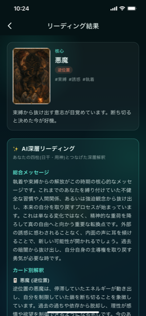
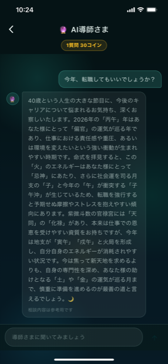

SajuPrime
生まれた瞬間、天が記した物語。
生年月日時ひとつで四柱推命・紫微斗数・相性・タロットを占い、AI導師さまに相談できます。
生まれた瞬間、天が記した物語。
生年月日時ひとつで四柱推命・紫微斗数・相性・タロットを占い、AI導師さまに相談できます。
SajuPrime は、東洋の命理学のエッセンスを一つにまとめた AI 占いアプリです。生年月日時を入力すると四柱推命の命式を立て、五行のバランスや日干の強弱、用神まで自動で算出。あなたが生まれ持った気のバランスを一目で見渡せます。難しい万年暦を知らなくても、生まれた瞬間に刻まれた物語をやさしく、深く読み解きます。
占いは四柱推命だけにとどまりません。人生を十二宮で読み解く紫微斗数の命盤、二人の相性スコアと五行の相生・相剋、そして今日の問いに答えるタロットまで一つのアプリに。タロットや運勢の解釈は単なるカードの意味づけにとどまらず、あなたの四柱（日干・用神）と結びつけた AI 深層リーディングで、今のあなたに必要なメッセージを導きます。
毎朝は今日の運勢スコアと吉凶（宜・忌）を確認し、気になることがあれば AI 導師さまに直接相談できます。SajuPrime は日本語・한국어・English・中文の4言語に対応し、現在ストアの審査を進めています。公開が決まり次第、このページでダウンロードリンクをご案内します。
四柱推命から紫微斗数・相性・タロット・AI相談まで、一つのアプリで
年・月・日・時の四柱を立て、五行の分布、日干の身強・身弱、用神・喜神を自動で分析し、生まれ持った気のバランスを示します。
命宮・財帛・官禄など十二宮に配された主星・補佐星と四化（化禄・化権・化科・化忌）を命盤で確認し、大限・流年・流月・流日の流れまで追えます。
二人の命式を並べて比較し、100点満点の相性スコアと五行の相生・相剋の関係、関係で気をつけたい点を読み解きます。
正位置・逆位置のカードを引き、あなたの四柱（日干・用神）と結びつけた AI 深層リーディングで総合メッセージとカード別の解釈を受け取れます。
「今年、転職してもいい？」といった悩みを尋ねると、四柱や紫微斗数・流年を根拠に導師さまが最適な助言をくれます。
毎日更新される今日の運勢スコアと吉凶（宜・忌）、今日すると良いこと・控えたいことをホームですぐ確認できます。
分析結果を画像・PDFで保存して共有でき、過去の分析は履歴からいつでも見返せます。
日本語・한국어・English・中文に対応し、アプリ内で言語をすぐ切り替えられます。
深海オーロラの神秘的なUI

ホーム

四柱推命

紫微斗数

相性
生年月日時を入力するだけで四柱が立ち、木・火・土・金・水の五行分布がレーダーチャートで一目に。日干の強弱とともに用神・喜神も示され、何が過剰で何が不足しているかを理解できます。
命宮を中心に、兄弟・夫妻・財帛・官禄・福徳など十二宮に配された星と四化を命盤で表示。命盤だけでなく大限（10年）・流年・流月・流日まで切り替えて、時期ごとの流れを見渡せます。
カードを引くと核となるカードの正位置・逆位置とキーワードを表示し、そこにあなたの四柱（日干・用神）を組み合わせた AI 深層リーディングを加えます。総合メッセージとカード別の解釈で、今必要な助言を届けます。

転職・恋愛・金運・健康など、人生の悩みを自然な文章で尋ねてみてください。導師さまがあなたの四柱や紫微斗数、今年の流年を根拠に状況を読み解き、時期と方向についての最適な助言を届けます。

SajuPrime についての疑問にお答えします
生年月日時を入力すると、四柱推命と五行分布、日干の強弱や用神を分析します。さらに紫微斗数の命盤、二人の相性、タロットのリーディング、今日の運勢・吉凶、AI導師さま相談まで一つのアプリで利用できます。
SajuPrime のタロットはカードの意味づけにとどまらず、あなたの四柱の日干・用神の情報と組み合わせた AI 深層リーディングを提供します。同じカードでも、あなたの気の状態に合わせた総合メッセージとカード別の解釈を受け取れます。
日本語・한국어・English・中文の4言語に対応し、アプリ内ですぐ切り替えられます。
SajuPrime は自己理解と娯楽のための参考用アプリです。提供される運勢や助言は参考用であり、医療・法律・財務などの専門的判断や重要な決定に代わるものではありません。
Android 版は Google Play で今すぐダウンロードできます。iOS（App Store）版は現在審査中で、公開が決まり次第このページに App Store リンクをご案内します。